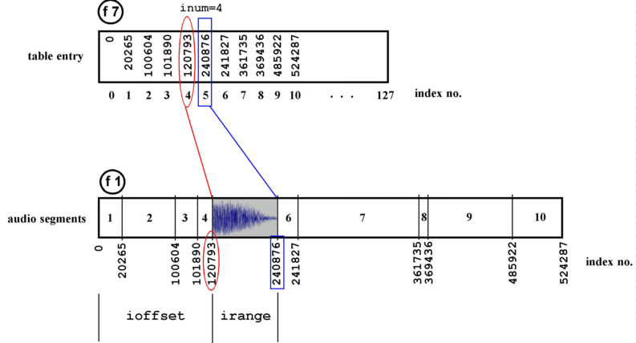

Real-Time
Features
Departments

A Real-Time CSound Orchestra
Part 1 - Sensing and Storing Audio
Richard Bowers
richardbowers@kakutopia.fsnet.co.uk
http://www.kakutopia.fsnet.co.uk
Aim
I had always considered CSound to be a strictly ‘deferred-time’ application which somehow resisted real time use because of the computational load put upon the processor by audio-rate number-crunching. However, in recent years the computation speeds on desktop computers have enabled quite sophisticated orchestras to run admirably in a real-time situation. Gabriel Maldonado’s Direct CSound is a real-time-optimised variety of CSound which makes a Pentium PC running Windows a suitable platform for experiment of this kind. He outlines four methods of using CSound in real-time in his chapter ‘Using real-time Csound MIDI with Windows’ from the CSound Book cdrom. The emphasis was on MIDI control and, to serve this end, Gabriel has introduced a large number of opcodes to CSound to extend its MIDI functionality.
This increase in MIDI functionality is a great asset in the real-time situation because it removes the need for a predetermined score and allows for free improvisation to some degree. However, I was looking for a way of removing MIDI from the equation and creating a composing, or improvising, environment which worked with audio material alone – audio which both controlled parameters and provided the sonic material.
What is described below is a kind of ‘work in progress’ insofar as the orchestra is still being developed in the studio. Unlike the traditional way of testing CSound as a score-driven application, real-time tests are usually conducted with unrepeatable (‘live’) material and the types of ‘errors’ one is trying to correct are more often stylistic ones, ie. personal decisions about the ways in which your orchestra is changing and presenting your material. One of the joys of using this method is that you are making aesthetic decisions based on varied output – which means that your efforts are directed towards changing the orchestra’s behaviour in a general way.
In this implementation I wanted to avoid the use of direct synthesis (albeit triggered by audio input) from within the orchestra. My feeling was that using deterministic synthesis methods would be at odds with the spirit of the piece and that my attention would be unduly diverted towards fine-tuning synthesis parameters. Signal modification may be used, but only where the signal is unique to the performance- ie. captured ‘live’ audio.
This orchestra is certainly not one which would be useful to others ‘as is’. It is idiosyncratic and probably contains much that could be written more efficiently by an experienced programmer and certainly more imaginatively by a skilled composer. However, I hope that newcomers to the idea of using CSound in real-time would see potential in some of its aspects, particularly in the way it ‘captures’ the audio.
Overview
Signal sensing is the system’s ‘interface’ with the outside world. The input signal is tested for amplitude and a signal of sufficient strength will trigger the start of pitch detection and the simultaneous writing of the audio into a table. When the amplitude drops below another threshold the writing stops and pitch detection is switched off. The process is repeated at the next strong signal. These chunks of audio data are stacked up to be retrieved arbitrarily subsequently.
The pitch detection of incoming audio is used to affect the playback of the stored audio. Thus, some degree of control is afforded the performer over the way the stored audio is replayed. Another example of such control is the amplitude sensing, which returns a duration value, determined in performance, to be applied to a cycling envelope over the played-back audio.
As you would expect, there are a number of ways of configuring an orchestra such as this but, briefly, this implementation attempts to:
- capture incoming audio
- capture some of its features
- play back looped chunks of this audio
- modulate the audio using data derived from the current input
The Design
Amplitude sensing
Because there is a need for chopping up the incoming audio into manageable chunks and for applying non-uniform processing to the audio I chose to cook up some form of amplitude thresholding to gate the input. Conditional statements and rms sensing offered this functionality.
Instrument 18 constantly monitors the rms value of the incoming signal, waits for the threshold to be crossed and continues to wait while the rms rises. When the rms starts to drop (after a peak in an attack, for instance) the time is noted and written to gkstart. The flag gkpflag01 is set to 1 allowing the instrument to branch to the next section of the instrument and avoid sensing further peaks for the time being. Also the flag triggers another flag within instrument 90. The present instrument then waits for the rms to drop below the lower threshold during which time instrument 90 is doing its work:
if gkrms>gklow kgoto continue
When the lower threshold is crossed the time is noted (gkend), the duration calculated (gkdur=gkend-gkstart) and a cps value calculated (gkdurcps) which shall be used to make an oscillator read a table at a rate which relates to gkdur. The flags and the default value for the threshold are reset.
Pitch Detection
Instrument 90 waits for a conditional branch to be tripped so that pitch detection can begin. As mentioned above, this happens when instrument 18 hears a strong signal, thus when gkpflag01=1.
The incoming signal (ga1) is fed into the spectrum opcode for conversion into a wsig data type which is, in turn, tracked for pitch and amplitude by specptrk. This opcode returns 0 for pitch (koct) if the signal drops below a certain threshold. This means that an unwanted portamento effect occurs at times, going from 0 cps to the current pitch. To overcome this a statement is included which maintains the previous pitch value if koct becomes zero:
koct=(koct=0 ? gkproct : koct)
.
.
.
gkproct=koct
Writing Audio and Data
Next, audio (ga1) is written to table 1 using tablew. This process is controlled by a phasor running at a speed which matches the table index numbers to the audio rate:
and phasor gitabcps
andex=and*gitablen
tablew ga1, andex, 1, 0, 0, 1
The constant gitabcps is calculated as 1/(table length/sampling rate) and is calculated once in the header of the orchestra. It is a generally useful constant which represents a cps value for reading table 1 at normal speed.
It is worth noting here that the phasor will hold its last position when the writing stops (ie. when the signal drops below the threshold and the branching avoids the phasor) and will resume from the same position when the next strong signal comes. This means that the chunks of audio can be written contiguously into the table.
Figure 1 – Illustrating the relationship between the data table and the audio table: f7 stores the lookup references into f1 enabling arbitrary playback of the segments.

Another table (f7) is used to store the locations of the starts of each chunk of audio in table 1. The index number (andex) is written to table 7 at location gkdata. gkdatatable (see figure 1). is incremented by 1 each time a new chunk is to be written resulting in a table of pointers into the audio
A conditional branch is included to prevent this writing from happening at every k-rate pass:
if gkpitchflag=gkpitchprev kgoto contin
.
.
.
gkpitchprev=gkpitchflag; note the previous state
(In other words, if the flag indicating that writing can take place is still in the same state, don’t carry out this bit again.)
The lines
gkdata=(gkinxprev>kindexno ? 0 : gkdata)
gkinxprev=kindexno
are included to prevent the orchestra from reading old data after wraparound has occurred in table 1. I shan’t say much about this here except that after wraparound occurs the pointers into the table start to become invalid. Rather than wipe the tables I chose to ignore the invalid pointers and audio chunks by resetting the value of gkdata.
The last thing this section does is to reinitialise (reinit) at label segment.
Playback
So much for the writing. Now let’s take a look at a way of reading the indexing data and its associated audio.
Instrument 90, which runs continually, also includes the playback operations. The aforementioned reinit statement allows a fresh value (inum) to be generated whenever a new chunk is written. inum is used to randomly select a segment for playback:
gknum rand gkdata-1
.
.
.
inum=int(abs(gknum))
The rand opcode is placed outside the reinitialised segment section because reinitialisation will return the same value each time.
inum is a positive integer in the range 0 to gkdata-1, in other words any index number into table 7 which holds a valid reference to table 1. For example, (and this is illustrated in figure 1) ten entries have been written to table 7 representing the start indexes of ten chunks of audio in table 1. inum is assigned the number 4 so it reads (using the table opcode) the value of index 4 from table 7. Then the next value is read from table 7 (inum+1). These give us the start and end indexes of the fifth chunk of audio in table 1. These can be converted to values representing the offset and the range of the chunk to be read from table 1:
ioffset table inum, 7 ; read location inum from f7
inext table inum+1, 7 ; read next value
iplaces=abs(inext-ioffset) ; calculate range
Once a chunk has been selected it is played back using the phasor opcode in conjunction with the tablei opcode. After determining some cps for the phasor based on the pitch yielded by the pitchtracker the output of the phasor is used to control the speed of the reading of the chunk of audio:
kfact1 = kcps/1046.502 ;ratio for kcps using c7 as a base frequency
and2 phasor kfact1/(iplaces/sr)
This speed is therefore under the control of the performer to some extent ie. the input pitch at any moment will control the speed of playback via the variable kcps. However, the important part is getting the right range of the table to be read by tablei. An a-rate index (andex2) is established:
andex2=(and2*iplaces)+ioffset
When placed in a tablei opcode reading the audio table this results in the indexes being scanned over the range (iplaces), as established above, after being offset by ioffset places:
gasig5 tablei andex2, 1, 0, 0, 1
Each instance of the looped segment is faded in and out (kenv) to remove glitches. This looped audio is faded out overall (kdec) to silence over a period of time.
One feature that quickly became apparent in the first tests was the rapid build-up of dense material after a minute or so of sparse bursts of activity. The sparseness is attractive so an additional envelope (kspace) was applied to the continuous table read which gave a degree of ‘white space’. This envelope was controlled by the duration of the incoming audio by inverting gkdur as gkdurcps=1/gkdur.
Processing
Needless to say, since most of CSound’s opcodes can function in realtime there are a great many ways of modulating the sounds being read from the tables. Also, the manner in which the audio is played back is a huge area to be explored and is probably the area bearing the greatest potential from a musical standpoint.
The number and type of operations that can be carried out simultaneously shall depend on hardware and appropriate buffer sizes. Gabriel Maldonado’s documentation gives more on this subject. Also, real-time operations benefit greatly from the optimisations outlined in Chapter 4 of the Csound Book: "Optimising Your CSound Instruments" by Paris Smaragdis.
The audio extracts
The audio sample demonstrates some of the characteristics of the method. Drums.mp3 uses short noisy sounds which nevertheless have an influence on pitch. You can hear the changes in pitch being triggered by the input audio (which may also be the output audio being fed back from loudspeakers into the system). Also, looped sounds are audible, demonstrating the orchestra’s ability to select and access the segments in the audio table thanks to the references logged in the data table.
Drone.mp3 serves to illustrate the orchestra’s capability of being calmed down by the performer. A recorder choruses with its previous output. Although not demonstrated in this extract, there will often be a period of transition when old material is being flushed out of the table. This can take some time if the output from loudspeakers is influencing the orchestra’s behaviour. If there is no feedback, then it is merely a case of filling the table with enough audio (in this case about 11 seconds) to overwrite the old data.
Conclusion
Although some of the methods used in this orchestra may seem somewhat long-winded given the apparent simplicity of the tasks, the need to remove the uniformity from a real time interactive system demands the use of conditional testing and branching, a means for the efficient storage of audio for fast recall and some degree of player control via sensing. Certain sacrifices were made: audio quality can be a bit rough and the finite size of the audio table means that the system’s history is limited by practical choice.
Furthermore, the performance environment plays a considerable part in affecting the quality of the results. The extracts given here were recorded in a small room (about 12 by 10 feet) which gave me the freedom to enrich the sound a little using reverb2. When I carried out tests in a larger space (an old stone-built church) it was difficult to get the right balance of input levels and loudspeaker levels. Also, natural reverberation muddied the sound and stripped away any intimacy the instruments could evoke.
In my next article I intend to demonstrate a more imaginative way of handling the captured audio and to explain my extensions to the functionality of the orchestra to include rhythm and greater performer control.